| Function Name | Function | Graph | ||
|---|---|---|---|---|
| Constant | f(x) = a y = a |
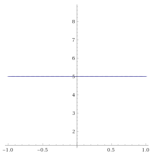 | ||
| Identity | f(x) = x y = x |
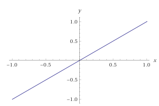 | ||
| Reciprocal | f(x) = 1/x y=1/x |
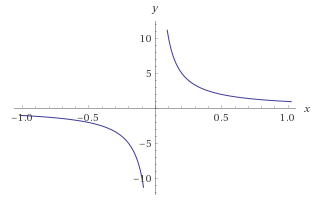 | ||
| Quadratic | f(x)=x^2 y=x^2 |
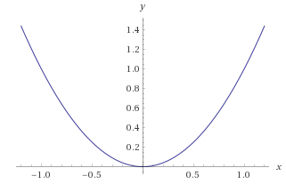 | ||
| Power | f(x)=x^n y=x^n |
n is even or odd | ||
| Cubic | f(x)=x^3 y=x^3 |
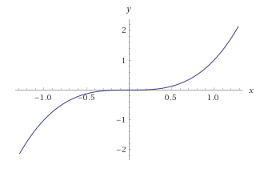 | ||
| Greatest Integer | f(x)=[x] y=[x] |
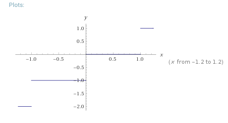 | ||
| Square Root | f(x)=sqrt(x) y=sqrt(x) |
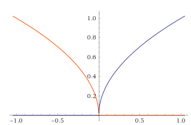 | ||
| Absolute Value | f(x)=|x| y=|x| |
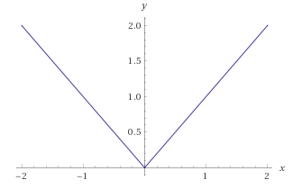 | ||
| Exponential | f(x)=a^x y=a^x |
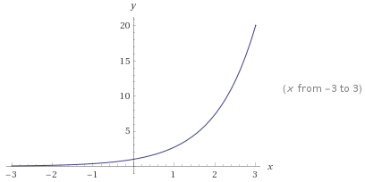 | ||
| Logarithm | f(x)=ln x y=ln x |
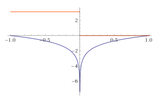 | ||
| Trigonometric | f(x)=cos(x) f(x)=sin(x) f(x)=tan(x) |
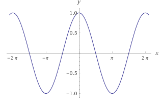 | 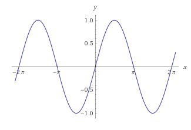 |  |